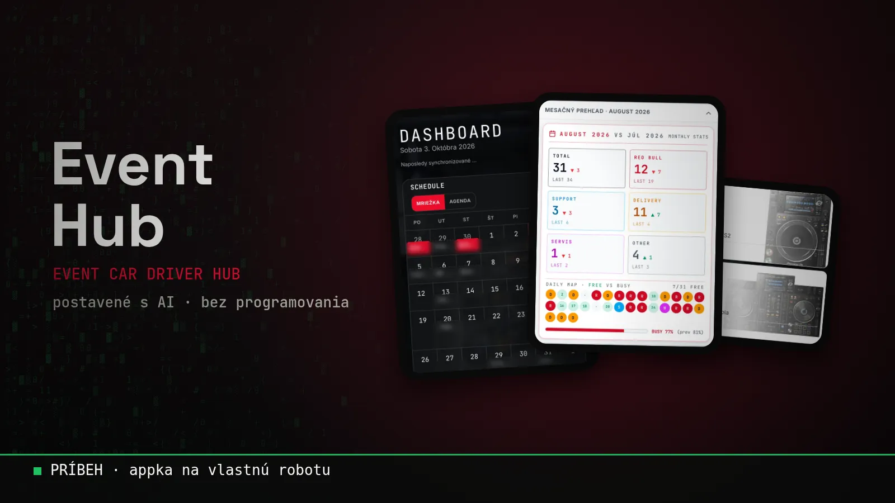

Blog ·
Postavil som si appku na vlastnú robotu. Bez programovania.
Jazdím s Red Bull event autom a celé dni som na cestách alebo na akciách. Administratíva sa kopila v Exceli, poznámkach a správach. Tak som si s AI postavil Event Hub: jedno miesto, ktoré mi všetko zbiera, triedi a samo pripomína.

Robím pre Red Bull. Jazdím s event autom a produkujem menšie eventy: gaming, kultúrne akcie, festivaly. Som na to úprimne hrdý. Red Bull je pre mňa love brand, a keď vidím, čo všetko sa okolo neho deje, od eventov až po F1, je to proste pecka.
Lenže s každou novou akciou rástla aj jedna nudná vec. Administratíva.
Excel, poznámky, správy, hlava, kalendár
Na začiatku som všetko riešil tak ako väčšina ľudí. Termíny v kalendári, čísla v Exceli, detaily v poznámkach, dohody v správach a zvyšok v hlave.
Kým akcií bolo málo, dalo sa to. Ale postupne pribúdali nové veci a eventov bolo čoraz viac. Odrazu som mal informácie na piatich miestach a stále som niečo hľadal. Najhoršie bolo, že som nestíhal administratívu. Celé dni som bol v aute alebo na evente, teda tam, kde sa na počítači efektívne pracovať nedá.
Nepotreboval som ďalšiu appku. Potreboval som jedno miesto, kam sa všetko zbehne samo, a jedného bota, ktorý mi povie, čo treba.
Prvý prompt, prvý deň
Tak som to skúsil s AI. A tu je vec, ktorá ma dodnes prekvapuje: jednoduchá použiteľná verzia fungovala hneď v ten deň, po prvom zadaní. Do týždňa som už mal niečo, čo som reálne používal každý deň.
A potom to začalo. Postupne som pridával ďalšie veci a s každou som pochopil, že aha, aj toto ide. Aj toto. Aj toto. Až som zrazu mal systém, ktorý drží pokope celú moju robotu.
Čo Event Hub dnes robí
- Rozpis a kalendár všetkých akcií na jednom mieste.
- Jazdy, náklady a výplaty, aby som vedel, čo kde bolo a koľko to stálo.
- Garáž, technika a sklad: čo mám v aute, čo kde je a čo chýba.
- Automatický prísun informácií: nové veci sa do neho dostanú samé, nemusím ich prepisovať.
- Pripomienky a správy: komunikujem s jedným botom, ktorý mi sám pripomenie, čo ma čaká.


Najlepšia chvíľa
Keď som prvýkrát exportoval dáta pre šéfa, pozerám na tie čísla a skoro mi ustrelilo dekel. Čo všetko to dokáže vytiahnuť a vypracovať. A zároveň sa smejem, aké zlé zadanie som na začiatku napísal.
Lenže práve vtedy som zistil niečo nové: AI robí presne to, čo jej povieš. Čím lepšie jej vysvetlíš, čo chceš, tým lepší výsledok dostaneš. A to sa dá naučiť.
Kto to používa
Primárne ja. Jednotlivé exporty posielam ďalším driverom a chcem to nasadiť aj ďalej. A celé to vzniklo bez toho, aby som bol programátor.
Čo si z toho vziať
Nehovorím, že si máš postaviť bankový systém. Na to sú iní ľudia. Ale veci, ktoré ti dnes žerú čas v robote alebo doma, sa dajú zjednodušiť oveľa ľahšie, než si myslíš:
- rozpisy, termíny a pripomienky,
- prehľad nákladov a dokumentov,
- informácie, ktoré dnes hľadáš v piatich appkách naraz.
Rovnaký princíp funguje aj doma. O tom, ako by vyzeral rodinný hub pre celú rodinu, som napísal samostatný článok.
Môj pohľad
Event Hub mi vrátil čas, ktorý som predtým trávil hľadaním a prepisovaním. Teraz ho trávim tam, kde ma to baví: na eventoch.
Ak máš podobný chaos, napíš mi. Buď ti takú vec postavím, alebo ťa naučím, ako si ju postavíš sám.
Chceš si niečo také vyskúšať sám? Na 3-hodinovej session ťa to naučím na tvojich vlastných veciach.
15 min hovor zadarmo